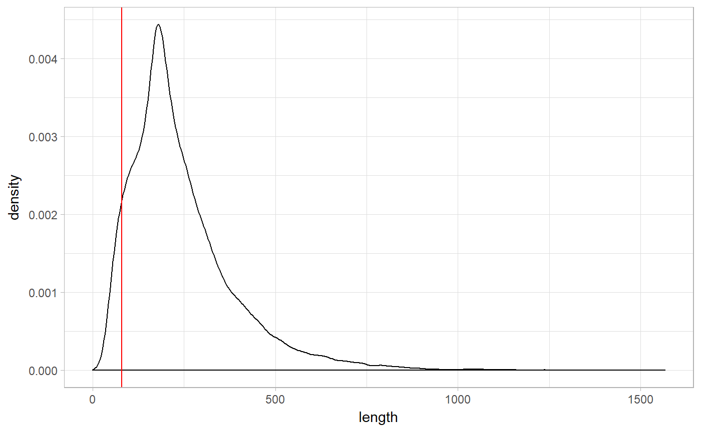
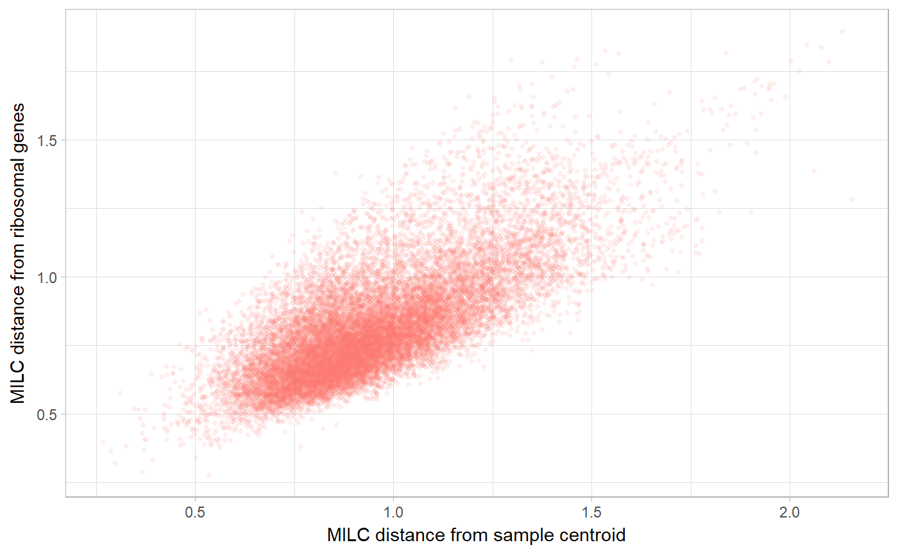
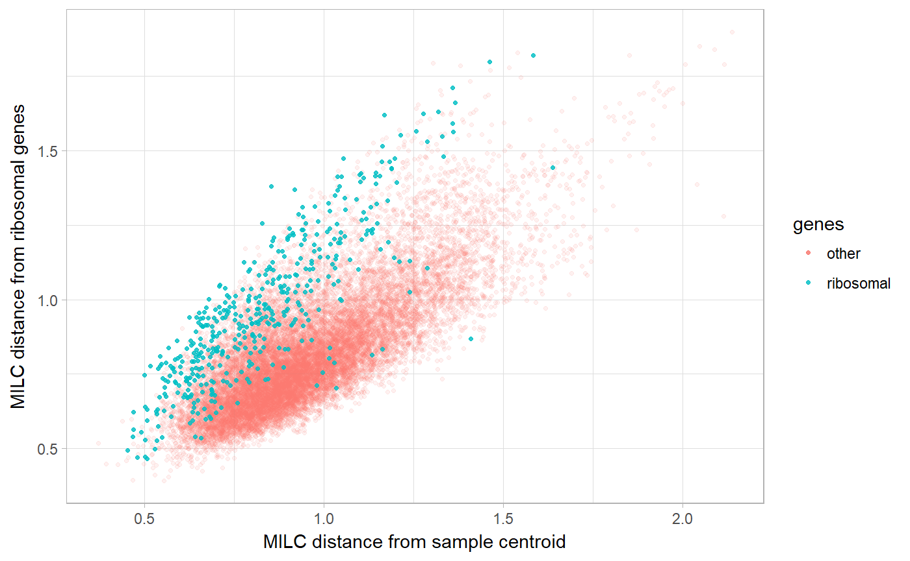
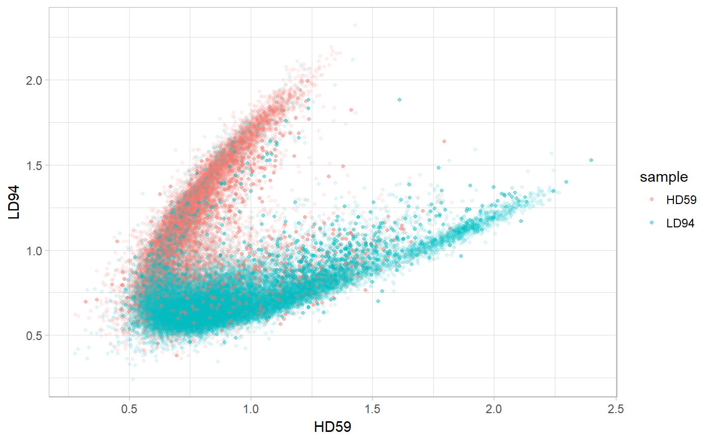
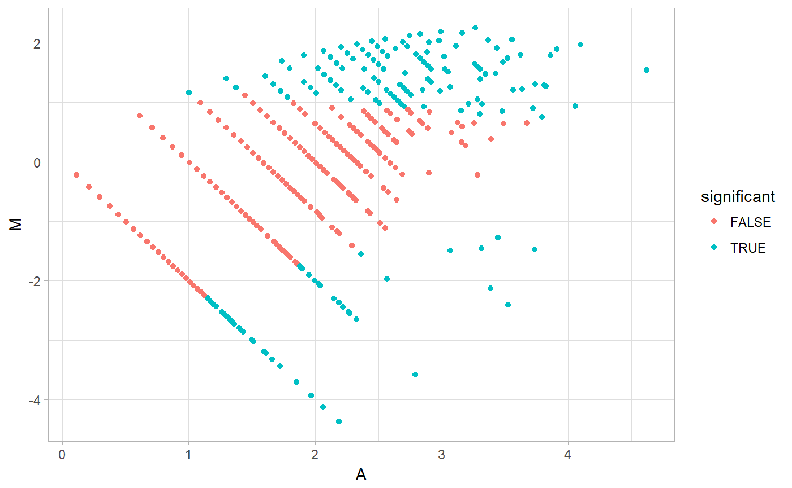
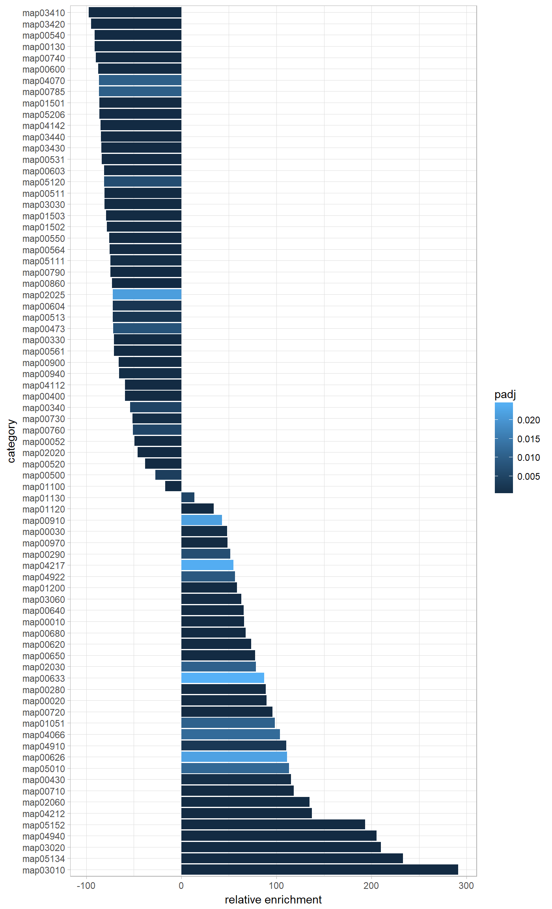

Abstract
coRdon provides tools for analysis of codone usage (CU) in various unannotated or KEGG/COG annotated DNA sequences. Funcionalities include: calculation of different CU bias statistics and CU-based predictors of gene expression, gene set enrichment analysis for annotated sequences, and several methods for visualization of CU and enrichment analysis results.
Not all synonymous codons are used equally often in prokaryotic genomes - this selective preference is termed codon usage (CU) bias, and is an independent determinant of gene expression regulation at the translational level. Those synonymous codons corresponding to the most abundant tRNA species are considered optimal for translation. Codon usage bias can therfore be used to predict the relative expression levels of genes, by comparing CU bias of a gene to the CU bias of a set of genes known to be highly expressed.
This approach can be efficiently used to predict highly expressed genes in a single genome, but is especially useful at the higher level of an entire metagenome. It has been shown that, as well as being present within the genome, CU bias is shared among the microbial spieces in the same environment. By analysing CU bias of a metagenome, one can identify genes with high predicted expression across the entire microbial community, and determine which are the enriched functions within the community, i.e. its ‘functional fingerprint’.
A typical workflow for analysing CU bias includes:
Sequences from human gut microbiome samples of healthy individuals and liver cirrhosis patients (Quin et al. 2014) were processed, assembled and used to predict ORFs, which were then annotated with a KO (KEGG orthology) function (Fabijanic and Vlahovicek 2016).
For each sequence, in each sample, we can calculate codon usage (CU) bias. In order to do this, we need to count occurrences of each codon in each sequence. This can be done by storing sequences in each sample as a codonTable object. We can use readSet() to read (a directory containing) .fasta files and store sequences as a DNAStringSet object, which could then be converted to codonTable using the constructor method codonTable().
For the purpose of this vignette we will create two codonTable objects, HD59 and LD94, containing codon counts for metagenomic gut sample from healthy individual, and from liver chirosis patient, respectively.
dnaLD94 <- readSet(file = "http://hex.bioinfo.hr/~mfabijanic/LD94.fasta")
LD94 <- codonTable(dnaLD94)
dnaHD59 <- readSet(file = "http://hex.bioinfo.hr/~mfabijanic/HD59.fasta")
HD59 <- codonTable(dnaHD59)codonTable object stores codon counts for each sequence, as well as some additional metadata, namely sequence ID infered from a .fasta file or DNAStringSet object, sequence length in codons and KO / COG annotation. Note that not all of these need be present in every codonTable object - only the codon counts, and inferred lengths are mandatory. They can be accessed using codonCounts() and getlen() (not to be confused with length() which returns number of sequences in a codonTable object):
cc <- codonCounts(HD59)
head(cc) AAA AAC AAG AAT ACA ACC ACG ACT AGA AGC AGG AGT ATA ATC ATG ATT CAA
[1,] 5 4 10 3 1 2 4 0 0 2 1 0 0 5 2 1 2
[2,] 3 5 4 1 2 3 5 1 0 1 0 0 0 8 4 4 0
[3,] 4 3 5 5 1 5 8 0 0 1 1 0 0 13 8 4 2
[4,] 1 9 12 3 1 14 7 0 0 5 0 0 0 15 6 6 2
[5,] 5 2 3 2 0 0 1 0 0 0 0 0 0 3 1 4 0
[6,] 5 1 2 3 3 5 1 3 1 1 0 4 5 7 10 4 3
CAC CAG CAT CCA CCC CCG CCT CGA CGC CGG CGT CTA CTC CTG CTT GAA GAC
[1,] 1 9 2 0 2 7 0 1 3 7 0 0 12 15 2 11 4
[2,] 4 3 1 0 1 4 1 0 4 1 0 0 5 11 2 3 9
[3,] 4 16 7 1 2 12 2 1 7 0 9 0 4 14 4 7 13
[4,] 2 15 3 0 1 4 1 0 9 1 8 0 5 15 1 10 12
[5,] 1 1 1 0 1 0 0 0 1 1 0 0 1 4 0 1 3
[6,] 4 6 0 0 7 1 3 0 5 0 3 0 2 6 0 16 4
GAG GAT GCA GCC GCG GCT GGA GGC GGG GGT GTA GTC GTG GTT TAA TAC TAG
[1,] 5 5 2 8 6 0 1 2 2 2 2 4 2 2 0 1 0
[2,] 9 2 2 7 13 1 2 12 4 2 0 9 3 2 0 1 0
[3,] 8 5 4 10 9 2 1 17 1 3 1 8 12 2 0 6 0
[4,] 8 7 3 5 8 0 2 9 0 1 0 3 12 2 0 6 0
[5,] 4 1 1 8 2 1 0 4 0 1 0 0 2 0 0 0 0
[6,] 1 3 8 11 1 4 7 8 0 8 7 6 3 2 0 3 0
TAT TCA TCC TCG TCT TGA TGC TGG TGT TTA TTC TTG TTT
[1,] 5 0 4 1 3 0 6 1 1 0 3 1 5
[2,] 5 1 4 6 0 0 4 0 0 1 2 2 2
[3,] 3 0 10 5 0 0 1 1 0 0 7 8 0
[4,] 1 0 5 3 0 0 0 0 0 0 10 3 3
[5,] 0 0 2 4 0 0 0 1 0 0 0 1 1
[6,] 4 2 2 2 0 0 1 2 1 3 3 3 2l <- getlen(HD59)
head(l)[1] 192 186 287 259 69 212length(HD59)[1] 19161We can get IDs, KO or COG annotations in a similar way, if these are present:
ko <- getKO(HD59)
head(ko)[1] "K01509" "K03431" "K08884" "K02313" "K01810" "K00174"Now we can calculate CU bias for every sequence. There are many statistics that measure codon usage, and several widely used ones are implemented in coRdon. For example, Measure Independent of Length and Composition (MILC) can be calculated for sequences in the codonTable like so:
milc <- MILC(HD59)
head(milc) self
[1,] 0.7231937
[2,] 0.7083612
[3,] 0.7014576
[4,] 0.7119265
[5,] 0.5658703
[6,] 0.7242135By default, MILC value for every sequence in a set is calculated with respect to the average CU bias of the entire sample (“self”). This can be changed by setting self = FALSE and providing a subset of reference genes, to which CU will be compared. This is commonly a subset of genes known to be highly expressed, e.g. ribosomal genes. If the sequences in the set are annotated, we can choose to calculate CU bias with respect to codon usage of ribosomal genes (i.e. codon usage of the subset of sequences in the sample which are annotated as ribosomal genes) simply by setting ribosomal = TRUE.
milc <- MILC(HD59, ribosomal = TRUE)
head(milc) self ribosomal
[1,] 0.7231937 1.0337208
[2,] 0.7083612 0.9530175
[3,] 0.7014576 0.8365788
[4,] 0.7119265 0.7975796
[5,] 0.5658703 0.8343067
[6,] 0.7242135 0.7887504Alternatively, instead of using ribosomal genes, we could use a subsets argument to provide a named list of character vectors of annotations for different genes to be used as reference set(s). However, if no annotation for sequences is available, one can still calculate CU bias with respect to some chosen subset(s) of genes, by setting subsets to be a named list of logical vectors of sequences to be included in this reference subset(s), or a named list with an entirely new reference codon counts table(s).
Also of note, self, ribosomal and subsets arguments can be combined, and MILC calculated for all sequences, with respect to each of thus specified reference sets of genes.
Another important consideration is that MILC, like most of the other CU bias statistics (and contrary to its name), is still somewhat dependent on the length of sequence for which it is calculated, and in order to obtain meaningful values, it is recommended that sequences should be at least 80 codons long. To that end, either soft or hard filtering step can be included in calculation of CU statistics. Hard filtering will remove all of the sequences from codonTable that are shorter than some specified threshold (length in codons, default is 80), whereas soft filtering will produce a message if there are such sequences in the set, but will not remove them.
milc <- MILC(HD59, filtering = "soft")Warning in MILC(HD59, filtering = "soft"): Some sequences have below-
threshold length!We can visually inspect distribution of sequence lengths, extracted from codonTable object using getlen():
lengths <- as.data.frame(getlen(HD59))
colnames(lengths) <- "length"
ggplot(lengths, aes(length)) +
geom_density() +
geom_vline(xintercept = 80, colour = "red") +
theme_light()
Now we calculate MILC values with respect to overall sample CU and ribosomal genes CU, removing beforehand sequences shorter than 80 codons (use len.threshold argument to specify differnt value of threshold):
milc <- MILC(HD59, ribosomal = TRUE, filtering = "hard")Other CU statistics can be calculated in the same way as MILC(), using one of the functions: B(), MCB(), ENCprime(), ENC() or SCUO(). Note however, that when calculating ENC and SCUO, one doesn’t need to provide a subset of reference genes, because these statistics measure distance in codon usage to uniform usage of synonymous codons.
Some additional arguments that can be set when calculating CU statistics are id_or_name2, for choosing a genetic code variant (see help for getGeneticCode() function in Biostrings package), alt.init for alternative initiation codons, stop.rm for removal of STOP codons.
Now we can visualize CU bias for every gene on the B plot.
Here, every gene is represented by a single point on the plot, its coordinates determined by distance of genes’ CU bias to overall CU bias (“self”, on y axis) and to CU bias of reference genes (“ribosomal”, on x axis).x and y are names of columns in a matrix given as data argument, they can alternatevly be numeric vectors (of the same length), containing values of the CU statistic we wish to plot one against the other.
library(ggplot2)
xlab <- "MILC distance from sample centroid"
ylab <- "MILC distance from ribosomal genes"
milc_HD59 <- MILC(HD59, ribosomal = TRUE)
Bplot(x = "ribosomal", y = "self", data = milc_HD59) +
labs(x = xlab, y = ylab)
milc_LD94 <- MILC(LD94, ribosomal = TRUE)
Bplot(x = "ribosomal", y = "self", data = milc_LD94) +
labs(x = xlab, y = ylab)The argument annotations needs to be specified when we wish to indicate certain genes on the plot. For example, to indicate ribosomal genes, provide character vector of annotations corresponding to values in x, y and data, and set ribosomal = TRUE. Note that, if we filtered sequences when calculating MILC, we need to provide the annotations for those sequences only.
genes <- getKO(HD59)[getlen(HD59) > 80]
Bplot(x = "ribosomal", y = "self", data = milc,
annotations = genes, ribosomal = TRUE) +
labs(x = xlab, y = ylab)
To indicate any other gene(s), use reference argument. reference takes a list of length 1, containing either a logical vector in which TRUE corresponds (by position) to genes that are to be indicated on the plot, and FALSE to all the other genes, or a character vector of annotations for the genes to be indicated on the plot.
Another interesting way to visualise codon usage is to plot the CU distances between the two samples on the B plot. This can be done using intraBplot() function which takes as arguments two codonTable objects and a character indicating which CU statistic to plot. We can also choose to indicate ribosomal genes on the plot by setting ribosomal = TRUE, these genes will now be shown as stronger points on the plot.
intraBplot(HD59, LD94, names = c("HD59", "LD94"),
variable = "MILC",
ribosomal = TRUE)
Next, we predict expression levels of genes in each sample, with ribosomal genes once again used as a reference. There are several measures of CU-based gene expressivity implemented in coRdon. Here we calculate values of MILC-based Expression Level Predictor (MELP), with respect to ribosomal genes, and excluding sequencs shorter than 80 codons (this is the default value of len.threshold):
melp <- MELP(HD59, ribosomal = TRUE, filtering = "hard")
head(melp) ribosomal
[1,] 0.7112424
[2,] 0.7514472
[3,] 0.8478242
[4,] 0.9008746
[5,] 0.9106633
[6,] 0.8318351Other statistics that measure gene expresivity can be calculated analogously, using E(), CAI(), GCB(), and Fop() functions.
Genes from a single sample with high expressivity values (e.g. MILC greater than 1) are considered to be optimized for translation in that sample. If annotation for genes is available, we can perform enrichment analysis in order to determine which functions are significantly enriched in any given sample.
We can identify most significantly enriched or depleted functions in the set of annotated genes predicted to have high expression level.
For a single sample, we first create a contingency table summarising counts of genes annotated to each KO category among all the genes in sample, and among those predicted to be highly expressed. We do this using crossTab() function, giving it a character vector of genes’ annotations, and a numeric vector of their respective MELP values, and specifying that a subset of highly expressed reference genes should contain those genes that have MELP value grater than 1 (this is default value of threshold).
ct <- crossTab(genes, as.numeric(melp), threshold = 1L)
ctcrossTab instance for 17829 sequences.
Sequence annotations:
chr [1:17829] "K01509" "K03431" "K08884" "K02313" "K00174" "K01846" ...
Corresponding variable values:
num [1:17829] 0.711 0.751 0.848 0.901 0.911 ...
Contingecy table:
category all gt_1
1: K00001 16 4
2: K00002 1 0
3: K00003 16 4
4: K00005 5 1
5: K00008 1 1
---
1660: K13789 17 1
1661: K13821 3 0
1662: K13829 2 0
1663: K13923 1 0
1664: K13924 3 0Output of crossTab() function is an object of crossTab class, containing gene anotations, respective values of the given variable, and a contingency table with counts for all genes, and for each defined subset of genes. They can all be accessed like so:
contable(ct) category all gt_1
1: K00001 16 4
2: K00002 1 0
3: K00003 16 4
4: K00005 5 1
5: K00008 1 1
---
1660: K13789 17 1
1661: K13821 3 0
1662: K13829 2 0
1663: K13923 1 0
1664: K13924 3 0ann <- getSeqAnnot(ct)
head(ann)[1] "K01509" "K03431" "K08884" "K02313" "K00174" "K01846"var <- getVariable(ct)
head(var)[1] 0.7112424 0.7514472 0.8478242 0.9008746 0.9106633 0.8318351We could have also defined the subset of highly expressed genes by specifying a percent of genes with highest MELP values:
crossTab(genes, as.numeric(melp), percentiles = 0.05)crossTab instance for 17829 sequences.
Sequence annotations:
chr [1:17829] "K01509" "K03431" "K08884" "K02313" "K00174" "K01846" ...
Corresponding variable values:
num [1:17829] 0.711 0.751 0.848 0.901 0.911 ...
Contingecy table:
category all top_0.05 gt_1
1: K00001 16 0 4
2: K00002 1 0 0
3: K00003 16 2 4
4: K00005 5 0 1
5: K00008 1 1 1
---
1660: K13789 17 0 1
1661: K13821 3 0 0
1662: K13829 2 0 0
1663: K13923 1 0 0
1664: K13924 3 0 0Of note, both threshold and percentiles can be numerical vectors, in which case the functions used in subsequent analysis (enrichment and associated plotting functions, enrichMAplot, enrichBarplot) will produce output for each thus specified reference susbset.
Having a contingency table, we can perform enrichment analysis. This implies scaling and transforming gene counts by MA transformation, and performing binomial test, optinally inncluding correction for multiple testing, as chosen by specifying the pAdjustMethod argument (see p.adjust.methods for possible options). Additional parameters pvalueCutoff and padjCutoff can be passed to the enrichment() function in order to exclude from the results those sequences that have higher significance levels than specified.
enr <- enrichment(ct)
enrAn object of class 'AnnotatedDataFrame'
rowNames: 1 2 ... 1664 (1664 total)
varLabels: category all ... padj (8 total)
varMetadata: labelDescriptionThe output is an object of AnnotatedDataFrame class from Biobase package. The data stored in this object can be accesed by using pData() method defined in Biobase.
require(Biobase)
enr_data <- pData(enr)
head(enr_data) category all gt_1 enrich M A pvals padj
1 K00001 16 4 34.438764 0.4269492 2.1084535 0.3559590 0.9631151
2 K00002 1 0 -14.526104 -0.2264442 0.1132221 1.0000000 1.0000000
3 K00003 16 4 34.438764 0.4269492 2.1084535 0.3559590 0.9631151
4 K00005 5 1 8.123351 0.1126781 0.9436609 0.5725245 1.0000000
5 K00008 1 1 70.947792 0.7735558 0.6132221 0.1562952 0.6095665
6 K00009 2 0 -25.367324 -0.4221207 0.2110603 1.0000000 1.0000000We can plot enriched and depleted KO categories on an MA plot, with significant enrichment or depletion defined as those having the p-value below the level of significance siglev 0.05 (one can also use adjusted p-value, by setting pvalue = “padj”, and different values of siglev).
enrichMAplot(enr, pvalue = "pvals", siglev = 0.05) +
theme_light()
In order to determine functions that are enriched among highly expressed genes, we need to map KO annotations to a broader onthology. This can be done using reduceCrossTab() method which takes a crossTab object as its first argument, and maps KO categories to either KEGG Pathway, KEGG Module, or COG functional categories, depending on the value of target argument.
ctpath <- reduceCrossTab(ct, target = "pathway")
ctpathcrossTab instance for 17829 sequences.
Sequence annotations:
chr [1:17829] "K01509" "K03431" "K08884" "K02313" "K00174" "K01846" ...
Corresponding variable values:
num [1:17829] 0.711 0.751 0.848 0.901 0.911 ...
Contingecy table:
category all gt_1
1: map00010 515 187
2: map00020 257 107
3: map00030 321 104
4: map00040 212 61
5: map00051 301 74
---
255: map05215 23 5
256: map05230 141 38
257: map05231 6 0
258: map05340 15 0
259: map05418 68 13We can then perform enrichment analysis using the reduced contingency table.
enrpath <- enrichment(ctpath)
enrpath_data <- pData(enrpath)
head(enrpath_data) category all gt_1 enrich M A pvals
1 map00010 515 187 66.05321 0.7316456 7.188766 8.254035e-11
2 map00020 257 107 89.47564 0.9220124 6.293881 1.073265e-09
3 map00030 321 104 48.00241 0.5656207 6.431435 1.174059e-04
4 map00040 212 61 31.37244 0.3936627 5.757365 3.233125e-02
5 map00051 301 74 12.63483 0.1716531 6.142992 2.918974e-01
6 map00052 476 52 -49.38825 -0.9824556 6.219148 2.774278e-08
padj
1 1.068897e-09
2 1.208590e-08
3 5.737381e-04
4 9.968802e-02
5 5.446909e-01
6 2.395127e-07Functional enrichment results can also be plotted on a bar plot, using enrichBarplot() method. Here, bars are coloured by the level of significance, padj, whereas their height is the relative enrichment "enrich" (can also be mean average of scaled counts, "A", or scaled counts ratio, "M"). If we also specify siglev, only those categories for which associated pvalue (“pvals” or “padj”) is below the given value will be ploted.
enrichBarplot(enrpath, variable = "enrich",
pvalue = "padj", siglev = 0.05) +
theme_light() +
coord_flip() +
labs(x = "category", y = "relative enrichment")
Prior to plotting, KEGGREST package can be used to match pathway identifiers to pathway descriptions, in order to produce a more informative plot.
require(KEGGREST)
paths <- names(keggList("pathway"))
paths <- regmatches(paths, regexpr("[[:alpha:]]{2,4}\\d{5}", paths))
pnames <- unname(keggList("pathway"))
ids <- match(pData(enrpath)$category, paths)
descriptions <- pnames[ids]
pData(enrpath)$category <- descriptions
enrpath_data <- pData(enrpath)In order to pipe the results from CU analysis in various downstream applications, it is useful to have the data from different samples in a single matrix, with sequences (genes) in rows and values for different samples in columns. This can be achieved with enrich.matrix() function.
For example, if we performed CU-based enrichment analysis on the two metagenomic samples described at the beginning of this vignette, and wanted to see how the results compare by plotting them on a heatmap (e.g. using the ComplexHeatmap package), we could do the following:
# calculate MELP
melpHD59 <- MELP(HD59, ribosomal = TRUE,
filtering = "hard", len.threshold = 100)
genesHD59 <- getKO(HD59)[getlen(HD59) > 100]
melpLD94 <- MELP(LD94, ribosomal = TRUE,
filtering = "hard", len.threshold = 100)
genesLD94 <- getKO(LD94)[getlen(LD94) > 100]
# make cntingency table
ctHD59 <- crossTab(genesHD59, as.numeric(melpHD59))
ctLD94 <- crossTab(genesLD94, as.numeric(melpLD94))
ctHD59 <- reduceCrossTab(ctHD59, "pathway")
ctLD94 <- reduceCrossTab(ctLD94, "pathway")
# calculate enrichment
enrHD59 <- enrichment(ctHD59)
enrLD94 <- enrichment(ctLD94)
mat <- enrich.matrix(list(HD59 = enrHD59, LD94 = enrLD94),
variable = "enrich")
head(mat) HD59 LD94
map00010 65.39609 89.29378
map00020 92.37626 92.37498
map00030 52.80571 64.70925
map00040 22.14637 11.64027
map00051 16.61736 23.71068
map00052 -52.22516 -58.08676Thus created matrix, with genes in rows and samples in columns, can be directly used as an argument to Heatmap() function for plotting. Also, for the purpose of neat visualization, we can again make use of the KEGGREST package to match pathway identifiers to pathway descriptions.
paths <- names(KEGGREST::keggList("pathway"))
paths <- regmatches(paths, regexpr("[[:alpha:]]{2,4}\\d{5}", paths))
pnames <- unname(KEGGREST::keggList("pathway"))
ids <- match(rownames(mat), paths)
descriptions <- pnames[ids]
rownames(mat) <- descriptions
mat <- mat[apply(mat, 1, function(x) all(x!=0)), ]
ComplexHeatmap::Heatmap(
mat,
name = "relative \nenrichment",
col = circlize::colorRamp2(c(-100, 0, 100),
c("red", "white", "blue")),
row_names_side = "left",
row_names_gp = gpar(fontsize = 8),
show_column_dend = FALSE,
show_row_dend = FALSE)